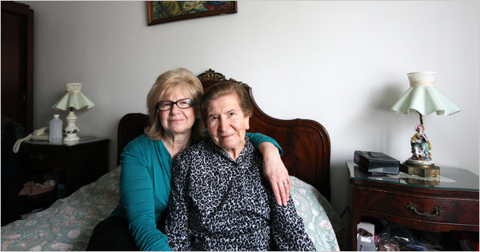

The chances of overhearing a conversation in Vlashki, a variant of Istro-Romanian, are greater in Queens than in the remote mountain villages in Croatia that immigrants now living in New York left years ago.
At a Roman Catholic Church in the Morrisania section of the Bronx, Mass is said once a month in Garifuna, an Arawakan language that originated with descendants of African slaves shipwrecked near St. Vincent in the Caribbean and later exiled to Central America. Today, Garifuna is virtually as common in the Bronx and in Brooklyn as in Honduras and Belize.
And Rego Park, Queens, is home to Husni Husain, who, as far he knows, is the only person in New York who speaks Mamuju, the Austronesian language he learned growing up in the Indonesian province of West Sulawesi. Mr. Husain, 67, has nobody to talk to, not even his wife or children.
"My wife is from Java, and my children were born in Jakarta — they don’t associate with the Mamuju," he said. "I don’t read books in Mamuju. They don’t publish any. I only speak Mamuju when I go back or when I talk to my brother on the telephone."
These are not just some of the languages that make New York the most linguistically diverse city in the world. They are part of a remarkable trove of endangered tongues that have taken root in New York — languages born in every corner of the globe and now more commonly heard in various corners of New York than anywhere else.
While there is no precise count, some experts believe New York is home to as many as 800 languages — far more than the 176 spoken by students in the city’s public schools or the 138 that residents of Queens, New York’s most diverse borough, listed on their 2000 census forms.
"It is the capital of language density in the world," said Daniel Kaufman, an adjunct professor of linguistics at the Graduate Center of the City University of New York. "We’re sitting in an endangerment hot spot where we are surrounded by languages that are not going to be around even in 20 or 30 years."
In an effort to keep those voices alive, Professor Kaufman has helped start a project, the Endangered Language Alliance, to identify and record dying languages, many of which have no written alphabet, and encourage native speakers to teach them to compatriots.
"It’s hard to use a word like preserve with a language," said Robert Holman, who teaches at Columbia and New York Universities and is working with Professor Kaufman on the alliance. "It’s not like putting jelly in a jar. A language is used. Language is consciousness. Everybody wants to speak English, but those lullabies that allow you to go to sleep at night and dream — that’s what we’re talking about."
With national languages and English encroaching on the linguistic isolation of remote islands and villages, New York has become a Babel in reverse — a magnet for immigrants and their languages.
New York is such a rich laboratory for languages on the decline that the City University Graduate Center is organizing an endangered-languages program. "The quickening pace of language endangerment and extinction is viewed by many linguists as a direct consequence of globalization," said Juliette Blevins, a distinguished linguist hired by City University to start the program.
In addition to dozens of Native American languages, vulnerable foreign languages that researchers say are spoken in New York include Aramaic, Chaldic and Mandaic from the Semitic family; Bukhari (a Bukharian Jewish language, which has more speakers in Queens than in Uzbekistan or Tajikistan); Chamorro (from the Mariana Islands); Irish Gaelic; Kashubian (from Poland); indigenous Mexican languages; Pennsylvania Dutch; Rhaeto-Romanic (spoken in Switzerland); Romany (from the Balkans); and Yiddish.
Researchers plan to canvass a tiny Afghan neighborhood in Flushing, Queens, for Ormuri, which is believed to be spoken by a small number of people in Pakistan and Afghanistan.
The Endangered Language Alliance will apply field techniques usually employed in exotic and remote foreign locales as it starts its research in the city’s vibrant ethnic enclaves.
"Nobody had gone from area to area looking for endangered languages in New York City spoken by immigrant populations," Professor Kaufman said.
The United Nations keeps an atlas of languages facing extinction, and U.N. experts as well as linguists generally agree that a language will probably disappear in a generation or two when the population of native speakers is both too small and in decline. Language attrition has also been hastened by war, ethnic cleansing and compulsory schooling in a national tongue.

Over the decades in the secluded northeastern Istrian Peninsula along the Adriatic Sea, Croatian began to replace Vlashki, spoken by the Istrians, what is described as Europe’s smallest surviving ethnic group. But after Istrians began immigrating to Queens, many to escape grinding poverty, they largely abandoned Croatian and returned to speaking Vlashki.
"Whole villages were emptied," said Valnea Smilović, 59, who came to the United States in the 1960s with her parents and her brother and sister. "Most of us are here now in this country."
Mrs. Smilović still speaks in Vlashki with her mother, 92, who knows little English, as well as her siblings. "Not too much, though," Mrs. Smilović said, because her husband speaks only Croatian and her son, who was born in the United States, speaks English and a smattering of Croatian.
"Do I worry that our culture is getting lost?" Mrs. Smilović asked. "As I get older, I’m thinking more about stuff like that. Most of the older people die away and the language dies with them."
Several years ago, one of her cousins, Zvjezdana Vrzić, an Istrian-born adjunct professor of linguistics at New York University, organized a meeting in Queens about preserving Vlashki. She was stunned by the turnout of about 100 people.
"A language reflects a singular nature of a people speaking it," said Professor Vrzić, who recently published an audio Vlashki phrasebook and is working on an online Vlashki-Croatian-English dictionary.
Istro-Romanian is classified by Unesco as severely endangered, and Professor Vrzić said she believed that the several hundred native speakers who live in Queens outnumbered those in Istria. "Nobody tried to teach it to me," she said. "It was not thought of as something valuable, something you wanted to carry on to another generation."
A few fading foreign languages have also found niches in New York and the country. In northern New Jersey, Neo-Aramaic, rooted in the language of Jesus and the Talmud, is still spoken by Syrian immigrants and is taught at Syriac Orthodox churches in Paramus and Teaneck.
The Rev. Eli Shabo speaks Neo-Aramaic at home, and his children do, too, but only "because I’m their teacher," he said.
Will their children carry on the language? "If they marry another person of Syriac background, they may," Father Shabo said. "If they marry an American, I’d say no."
And on Long Island, researchers have found several people fluent in Mandaic, a Persian variation of Aramaic spoken by a few hundred people around the world. One of them, Dakhil Shooshtary, 76, a retired jeweler who settled on Long Island from Iran 45 years ago, is compiling a Mandaic dictionary.
For Professor Kaufman, the quest for speakers of disappearing languages has sometimes involved serendipity. After making a fruitless trip in 2006 to Indonesia to find speakers of Mamuju, he attended a family wedding two years ago in Queens. Mr. Husain happened to be sitting next to him. Wasting no time, he has videotaped Mr. Husain speaking in his native tongue.
"This is maybe the first time that anyone has recorded a video of the language being spoken," said Professor Kaufman, who founded a Manhattan research center, the Urban Field Station for Linguistic Research, two years ago.
He has also recruited Daowd I. Salih, 45, a refugee from Darfur who lives in New Jersey and is a personal care assistant at a home for the elderly, to teach Massalit, a tribal language, to a linguistic class at New York University. They are meticulously creating a Massalit lexicography to codify grammar, definitions and pronunciations.
"Language is identity," said Mr. Salih, who has been in the United States for a decade. "So many African tribes in Darfur lost their languages. This is the land of opportunity, so these students can help us write this language instead of losing it."
Speakers of Garifuna, which is being displaced in Central America by Spanish and English, are striving to keep it alive in their New York neighborhoods. Regular classes have sprouted at the Yurumein House Cultural Center in the Bronx, and also in Brooklyn, where James Lovell, a public school music teacher, leads a small Garifuna class at the Biko Transformation Center in East Bushwick.
Mr. Lovell, who came to New York from Belize in 1990, said his oldest children, 21-year-old twin boys, do not speak Garifuna. "They can get along speaking Spanish or English, so there’s no need to as far as they’re concerned," he said, adding that many compatriots feel "they will get nowhere with their Garifuna culture, so they decide to assimilate."
But as he witnessed his language fading among his friends and his family, Mr. Lovell decided to expose his younger children to their native culture. Mostly through simple bilingual songs that he accompanies with gusto on his guitar, he is teaching his two younger daughters, Jamie, 11, and Jazelle, 7, and their friends.
"Whenever they leave the house or go to school, they’re speaking English," Mr. Lovell said. "Here, I teach them their history, Garifuna history. I teach them the songs, and through the songs, I explain to them what it’s saying. It’s going to give them a sense of self, to know themselves. The fact that they’re speaking the language is empowerment in itself."
Sam Roberts
April 28, 2010
© 2010 The New York Times